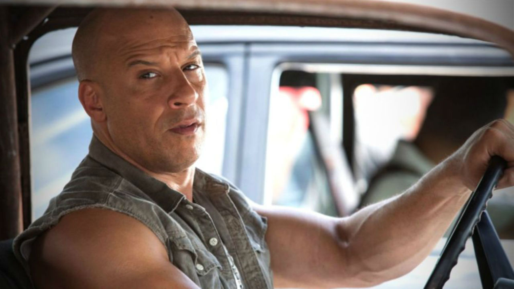
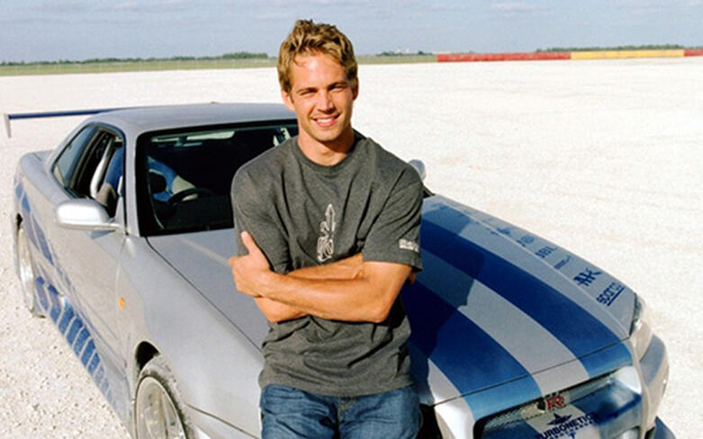
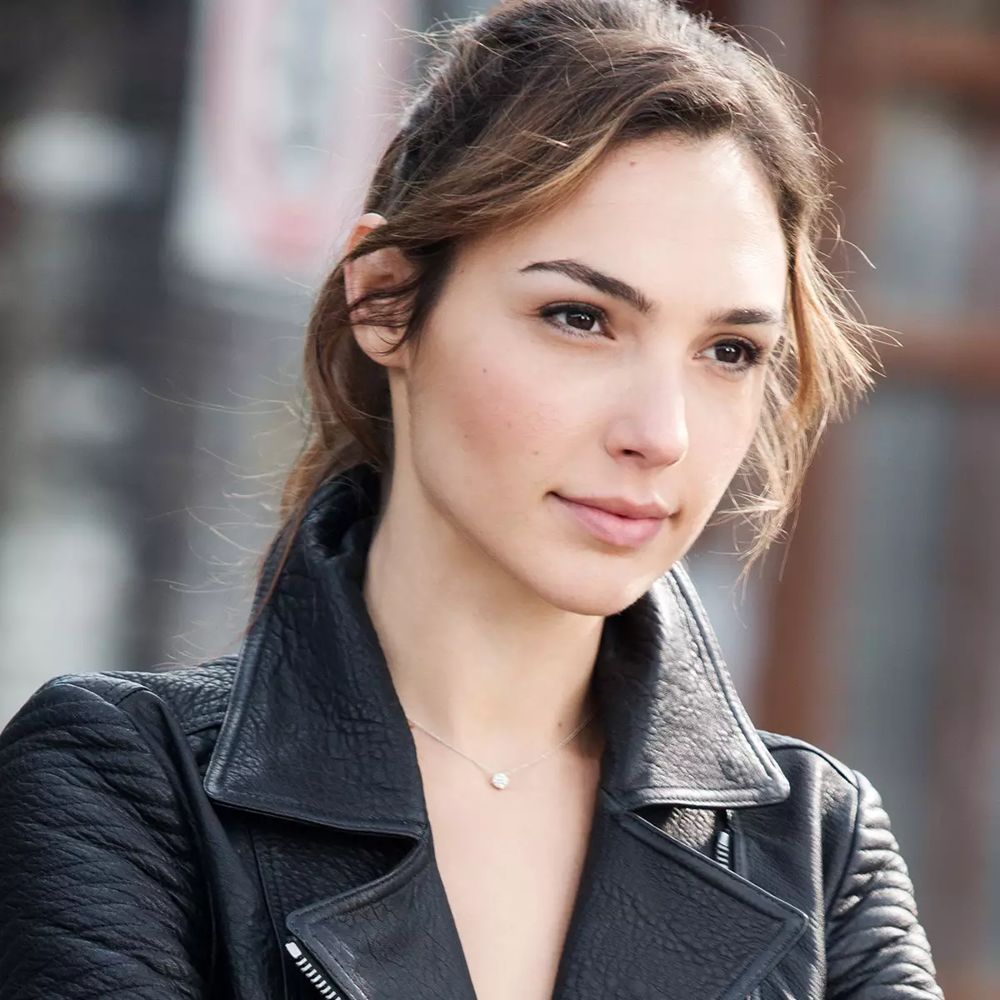
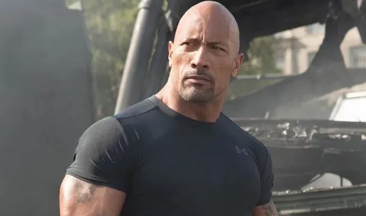
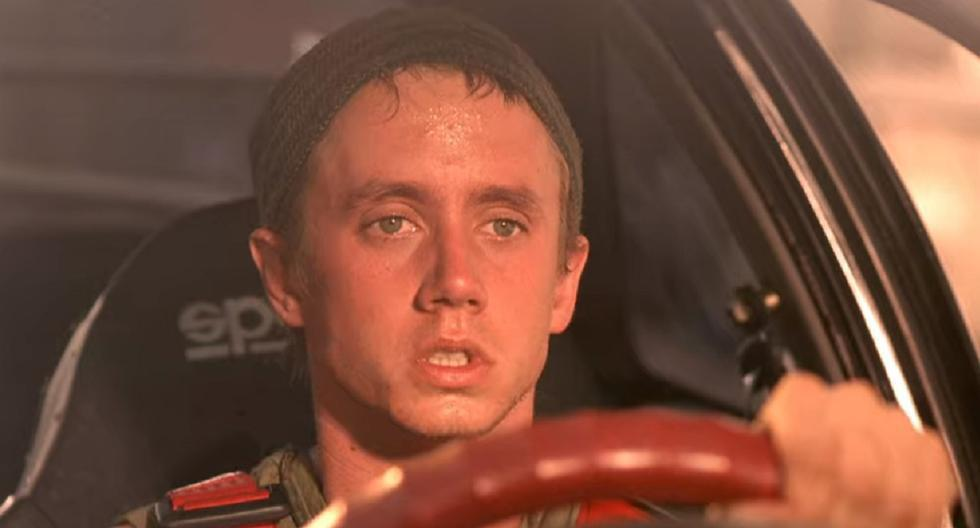
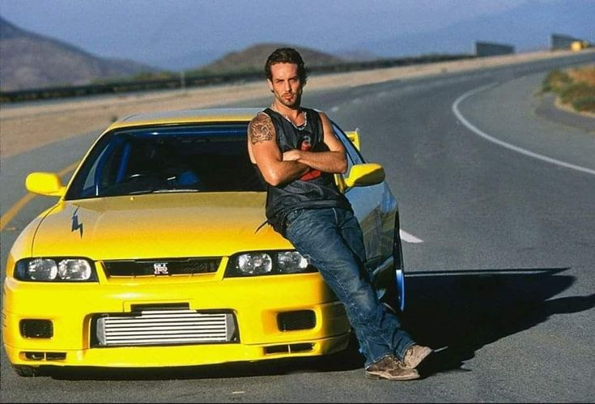
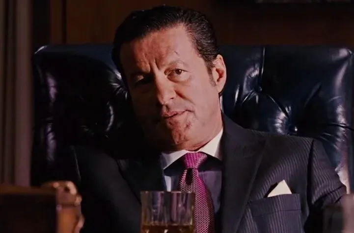
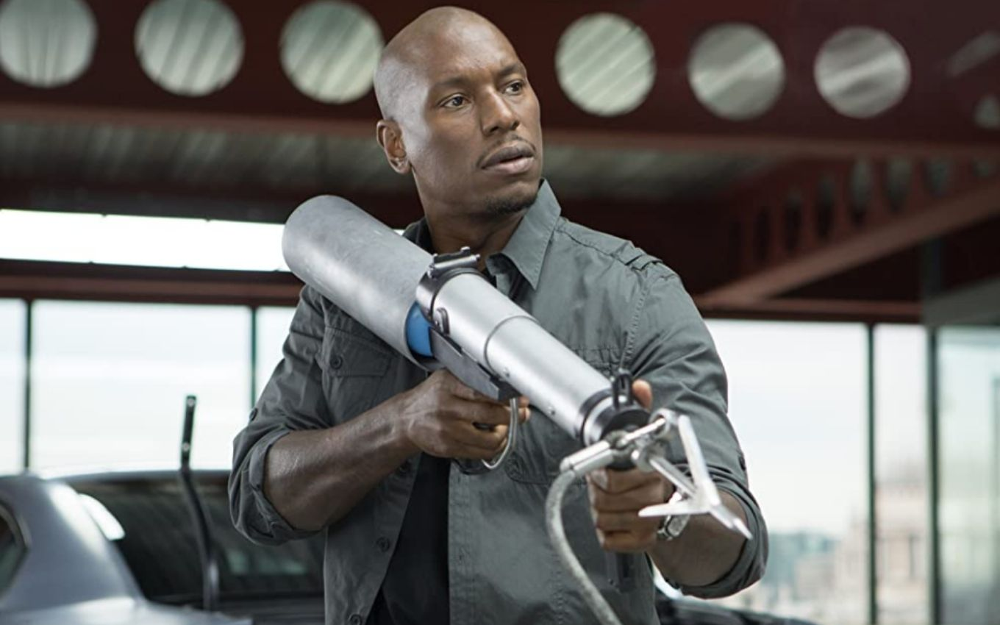
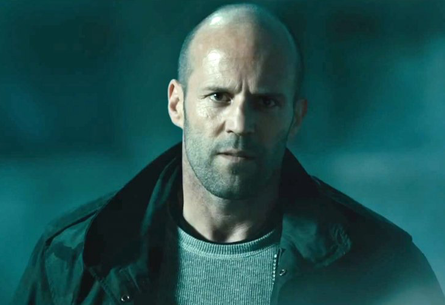
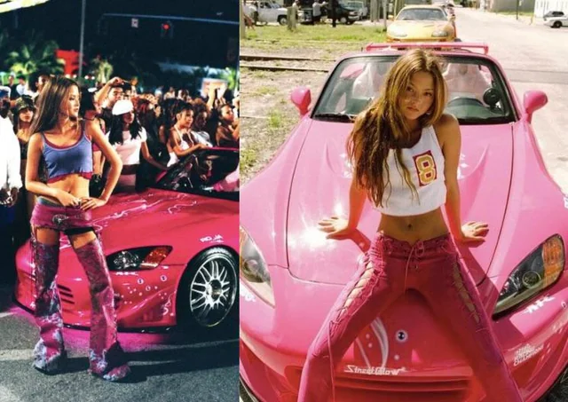

unidos pela velocidade
Conheça os maiores do racha de rua
os melhores personagens de velozes e furiosos que superam
o que chamamos de adrenalina que causam o caus nas ruas dos eua
aprenda criando
unidos pela velocidade
os melhores personagens de velozes e furiosos que superam
o que chamamos de adrenalina que causam o caus nas ruas dos eua

conheça nossos pilotos

Dominic toreto
Dominic toreto é o lider da gangue de piloto nos filmes que é marcado pela sua forte liderança.

bryan o conor
Bryan é um ex-agente do FBI e parceiro e melhor amigo do dominic em suas missões.

Gisele
Ela aparece pela primeira vez em Velozes & Furiosos 4 (2009) como contato do traficante Arturo Braga, antes de se juntar à equipe de Dominic Toretto.

Deckard Shaw
é um ex-militar britânico e agente secreto que virou mercenário na franquia Velozes e Furiosos.

Jesse
sse era um mecânico e especialista em computadores da equipe de Dominic Toretto no primeiro filme da franquia Velozes e Furiosos.

leon
Leon era um dos membros originais da equipe de rua de Dominic Toretto no primeiro filme da franquia.

Mia toretto
Ela é irmã de Dominic Toretto (Vin Diesel) e de Jakob Toretto (John Cena).

Reyes
Um poderoso empresário e traficante luso-brasileiro que controlava o crime e a polícia no Rio de Janeiro.

Roman
Ele aparece pela primeira vez em + Velozes + Furiosos (2003), quando ajuda Brian em uma missão para limpar sua ficha. Depois, ele se junta ao grupo de Dominic Toretto.

Shaw
é um ex-militar britânico e agente do MI6 que virou mercenário.

Suki
Ela é uma piloto de rua talentosa e amiga próxima de Brian O'Conner (Paul Walker) em Miami.

Tej Parker
Tej Parker é um ex-piloto de rua, mecânico e especialista em tecnologia da franquia.